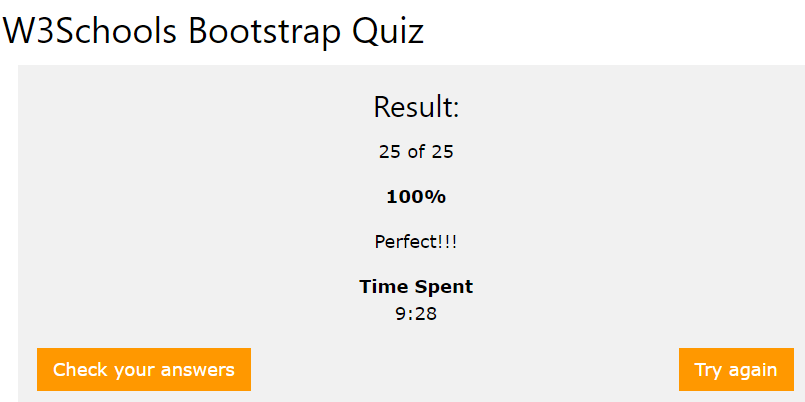
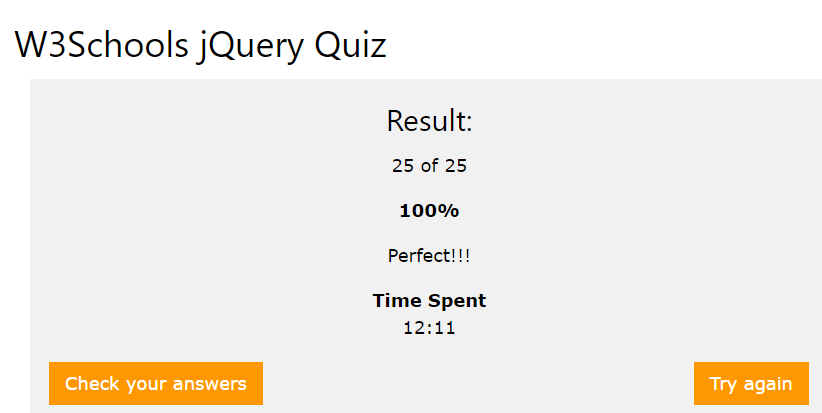

-
Docker
11 comments
Es una tecnología de creación de contenedores, que permite la creación y el uso de contenedores de Linux. Caracteristicas *Autogestión de los contenedores. *Fiabilidad *Aplicaciones libres de las dependencias instaladas en el sistema anfitrión. *Capacidad para desplegar multitud de contenedores en un mismo equipo físico. *Puesta en marcha de los servicios en un abrir y cerrar de ojos. *Contenedores muy livianos que facilitan su almacenaje, transporte y despliegue. La instalacion primero debemos configurar el repositorio Actualizar el aptíndice del paquete: $ sudo apt-get update Instale paquetes para permitir aptusar un repositorio sobre HTTPS: $ sudo apt-get install \ apt-transport-https \ ca-certificates \ curl \ software-properties-common Agregue la llave GPG oficial de Docker: $ curl -fsSL https://download.docker.com/linux/ubuntu/gpg | sudo apt-key add - Verifique que ahora tenga la clave con la huella digital 9DC8 5822 9FC7 DD38 854A E2D8 8D81 803C 0EBF CD88, buscando los últimos 8 caracteres de la huella digital. $ sudo apt-key fingerprint 0EBFCD88 INSTALAR DOCKER CE Actualizar el aptíndice del paquete. $ sudo apt-get update Instale la última versión de Docker CE, o vaya al siguiente paso para instalar una versión específica: $ sudo apt-get install docker-ce Para instalar una versión específica de Docker CE, enumere las versiones disponibles en el repositorio, luego seleccione e instale: a. Listar las versiones disponibles en tu repositorio: $ apt-cache madison docker-ce docker-ce | 18.03.0~ce-0~ubuntu | https://download.docker.com/linux/ubuntu xenial/stable amd64 Packages Verifique que Docker CE esté instalado correctamente ejecutando la hello-world imagen. $ sudo docker run hello-worldRead More -
Evaluacion
9 comments
Primero se realizo una una evaluacion sobre los temas de html, css, js
En la cual te da una serie de preguntas básicas y dependiendo de tu nivel te arroja un resultado. En mi caso me salio mas alto el js. Aqui te dejo los link y cuentame que tema tuviste la mayor puntuación. Estare respondiendo sus comentarios.
Los siguientes link:
Leer mas -
Wordpress
9 comments
Wordpress se ha convertido en uno de los sistemas de gestión de contenidos (CMS) más populares y usados en la red, esto es debido a que puede ser adaptado a diversos tipos de uso, además cuenta con una gran cantidad de plug-ins que le permiten potenciar aún más su uso WordPress nació del deseo de construir un sistema de publicación personal, elegante y con una buena arquitectura. Basado en PHP, MySQL y con licencia GPL, WordPress pone especial atención a la estética, estándares web y usabilidad.6 En principio, está configurado para usar un blog por sitio o instalación, pero también es posible tener varios blogs con varias o una única base de datos desde la versión 3.0 Está desarrollado en el lenguaje PHP para entornos que ejecuten MySQL y Apache, bajo licencia GPL y es software libre. Sus fundadores son Matt Mullenweg y Mike Little. WordPress fue creado a partir del desaparecido b2/cafelog y se ha convertido en el CMS más popular de la blogosfera y en el más popular con respecto a cualquier otro CMS de uso general Aqui les dejo el siguiente link:
Leer mas -
Instalación del servidor
9 comments
Para tener que nuestra pagina en internet debemos contrartar un servidor para esto hay varios que dan este servicio
En la cual esta DigitalOcean que es un proveedor estadounidense de servidores virtuales privados. Este tiene otorga facilidad de pago ya que cuenta con diferentes precios, da facilidad al usuario para elegir cual usar. En este caso yo escogi el primero que cuesta $5 dolares, es para un pc y tiene un 1Gb. Pero tambien hay otros ese es el mas barato puede llegar hasta $960 dolares mensuales para gan capacidad. Experiencia: Primero no sabia cuales eran y como se manejaban estos servicios ya que es algo nuevo y ahora estoy aprendiendo a utilizarlo. Aqui te dejo el link si te animas a comprar un servidor:
Leer mas -
BOOOSTRAP
9 comments
Bootstrap es una biblioteca multiplataforma o conjunto de herramientas de código abierto para diseño de sitios y aplicaciones web Bootstrap es modular y consiste esencialmente en una serie de hojas de estilo LESS que implementan la variedad de componentes de la herramienta. Se basa en una estructura dividida en un total de 12 columnas que los desarrolladores pueden gestionar en función de sus necesidades y preferencias, en función de cuatro tamaños de dispositivo. Luego de investigar y equivocarme una y otra ves esto fueron los resultados 1. Bootstrap 3 is mobile-first. true false R: true Bootstrap es sensible, más que eso, esta nueva versión viene con el enfoque de móvil primero. Bootstrap es el soporte para sitios web receptivos, de hecho, el módulo responsive se ha eliminado 2. Which class provides a responsive fixed width container? .container-fixed .container .container-fluid R: .container Bootstrap requiere un elemento contenedor para envolver los contenidos del sitio y alojar nuestro sistema de cuadrícula 3. Which class provides a full width container, spanning the entire width of the viewport? .container-fixed .container .container-fluid R: .container-fluid La respuesta es .container-fluid ya que es para un contenedor de ancho completo, que abarca todo el ancho de la ventana gráfica. 4. The Bootstrap grid system is based on how many columns? 3 6 12 9 R: 12 Esta retícula crece hasta 12 columnas a medida que crece el tamaño de la pantalla del dispositivo. 5. Which class adds zebra-stripes to a table? .table-striped .table-bordered .table-zebra .even and .odd R: .table-striped permite agregar rayas de cebra a cualquier fila de la tabla dentro de tbody>. 6. Which class shapes an image to a circle? .img-rounded .img-round .img-thumbnail .img-circle R: .img-circle Permiten tener una imagen en forma de circulo .img-rounded Adds rounded corners to an image (not available in IE8) .img-circle Shapes the image to a circle (not available in IE8) .img-thumbnail Shapes the image to a thumbnail .img-responsive Makes an image responsive (will scale nicely to the parent element) 7. Which class is used to create a big box for calling extra attention? .container .bigbox .jumbotron R: Un jumbotron indica una caja grande para llamar la atención adicional a algún contenido o información especial. Un jumbotron se muestra como un cuadro gris con esquinas redondeadas. También amplía los tamaños de fuente del texto dentro de él. Consejo: Dentro de un jumbotron puede colocar casi cualquier HTML válido, incluidos otros elementos / clases de Bootstrap. Usa un div>elemento con clase .jumbotron 8. Which button class is used to create a large button? .btn-large .btn-lg .btn-xl .btn-l R: .btn-lg Cada uno tiene representa un tamaño y boton grande es .btn-lg .btn-lg GRANDE .btn-md MEDIANO .btn-sm PEQUEÑO .btn-xs MAS PEQUEÑO 9. Which class is used to create a button group? .group-button .btn-group .group-btn .button-group R: .btn-group nos permite tener toda la coleccion de botones 10. How can you insert a search icon? span class="glyphicon glyphicon-search"> /span> span class="glyphicon-search"> /span> span class="glyph glyph-search"> /span> span class="glyphicon search"> /span> R: span class="glyphicon glyphicon-search"> /span> Los glifos se pueden usar en texto, botones, barras de herramientas, navegación, formularios, etc. Permite en un boton mostrar el simbolo de busquedad. 11. Which class is used to create a badge? .flag .tag .badge .label R: .bagde Las insignias se pueden usar como parte de los enlaces o botones para proporcionar un contador Ejemplo: span class="badge badge-primary">Primary /span> 12. Which class is used to create a basic pagination? .page .navigation .pages .pagination R: .pagination Para crear una paginación básica, agregue la .paginationclase a un ul> 13. Which class is used to create a basic list group? .list-group .group-list .grouped-list R:.list-group Para crear un grupo de lista básico, use un ul>elemento con clase .list-group 14. Which class adds a heading to a panel? .panel-head .panel-footer .panel-heading .panel-header R:.panel-heading Un panel en bootstrap es un cuadro bordeado con algo de relleno alrededor de su contenido .panel-heading clase agrega un encabezado al panel 15. Which class indicates a dropdown menu? .select .dropdown .dropdown-list R: .dropdown Un menú desplegable es un menú conmutable que permite al usuario elegir un valor de una lista. 16. A standard navigation tab is created with: ul class="nav nav-navbar"> ul class="nav nav-tabs"> ul class="nav tabs"> ul class="navigation-tabs"> R: ul class="nav nav-tabs"> Aplica la clase .nav para crear un elemento de navegación y después aplica la clase .nav-tabs para mostrar sus enlaces en forma de pestaña. 17. A standard navigation bar is created with: nav class="navigationbar navbar-default"> nav class="navbar default-navbar"> nav class="navbar navbar-default"> nav class="nav navbar"> R: nav class="navbar navbar-default"> Bootstrap nos facilita la creación de la barra principal de navegación de nuestra web mediante la clase .navbar 18. Which class is used to create a black navigation bar? .navbar-inverse .navbar-dark .navbar-black .navbar-default R: .navbar-inverse Bootstrap proporciona una barra de navegación negra alternativa con solo ponerla nav class="navbar navbar-inverse"> tendremos una barra de color negra. 19. Which plugin is used to cycle through elements, like a slideshow? Slideshow Carousel Scrollspy Orbit R:Carousel El carrusel es una presentación de diapositivas para recorrer una serie de contenido, construido con transformaciones CSS 3D y un poco de JavaScript. Funciona con una serie de imágenes, texto o marcas personalizadas. También incluye soporte para controles e indicadores anteriores / siguientes 20. Which plugin is used to create a modal window? Modal Popup Window Dialog Box R: Modal Para activar la ventana modal, necesita usar un botón o un enlace. Luego incluye los dos atributos de datos *: data-toggle="modal" 21. Which plugin is used to create a tooltip? Tooltip Modal Dialog Box Popup R: Tooltip Una forma de inicializar todas las informaciones sobre herramientas en una página sería seleccionarlas por su data-toggleatributo Ejemplo: button type="button" class="btn btn-secondary" data-toggle="tooltip" data-placement="top" title="Tooltip on top"> Tooltip on top button> 22. Which contextual class indicates a succesful or positive action? .text-primary .text-success .text-info .text-warning R: .text-success 23. Which contextual class indicates a dangerous or potentially negative action? .text-primary .text-warning .text-info .text-danger R: .text-danger Nos muestra un boton con fondo rojo ejemplo: a href="#" class="text-danger">Danger link 24. Which class indicates uppercased text? .text-capitalize .ucase .uppercase .text-uppercase R: .text-uppercase Nos permite mostrar el texto en mayuscula ejemplo:Uppercased text.
25. The Bootstrap grid system works across multiple devices. True False R: true El sistema de rejilla está pensado para ayudarnos en la disposición de los contenidos de nuestra web y su adaptación a los diferentes tamaños de pantalla de forma automática. Ya funciona en múltiples dispositivos entonces es verdadero. -
Jquery
9 comments
jQuery es una biblioteca multiplataforma de JavaScript, creada inicialmente por John Resig
jQuery consiste en un único fichero JavaScript que contiene las funcionalidades comunes de DOM, eventos, efectos y AJAX.
El manejo de eventos, la animación y Ajax sean mucho más simples con una API fácil de usar que funciona en una multitud de navegadores Jquery cuenta con un sin numero de funciones en la cuales puede hacer interacciones, widgets y efectos.Esto le da mucho más control sobre el estilo visual y la temática personalizada.
1. Which of the following is correct? Principio del formulario jQuery is a JavaScript Library jQuery is a JSON Library R: jQuery is a JavaScript Library Es un simple fichero con extensión .js en la que contiene objetos y funciones escritas en JavaScript. 2. jQuery uses CSS selectors to select elements? True False R: True jQuery te permite identificar y seleccionar elementos utilizando selectores CSS 3. Which sign does jQuery use as a shortcut for jQuery? the $ sign the ? Sign the % sign R: $() invocar la función jQuery. 4. Look at the following selector: $("div"). What does it select? All div elements The first div element R: All div elements Al poner va a tomar en cuenta todo lo que tenga en la funcion div> /div> 5. Is jQuery a library for client scripting or server scripting? Client scripting Server scripting R: Client scripting. Solo es para cliente 6. Is it possible to use jQuery together with AJAX? Yes No R: Si ya que jQuery posee varios métodos para trabajar con Ajax. 7. The jQuery html() method works for both HTML and XML documents True False R: No. Solo es para html. 8. What is the correct jQuery code to set the background color of all p elements to red? $("p").style("background-color","red"); $("p").manipulate("background-color","red"); $("p").layout("background-color","red"); $("p").css("background-color","red"); R: $("p").css("background-color","red"); El método css () establece o devuelve una o más propiedades de estilo para los elementos seleccionados. 9. With jQuery, look at the following selector: $("div.intro"). What does it select? All div elements with id="intro" The first div element with class="intro" The first div element with id="intro" All div elements with class="intro" R: All div elements with class="intro" Todos los que tenga div con la clase intro, realizara la funcion que le ponga solo con esos parametros. 10. Which jQuery method is used to hide selected elements? display(none) visible(false) hidden() hide() R: hide() Es un elemento con el que cuenta Jquery se lo puede agregar en el boton y en la funcion llamarlo para cuando el usuario de click la palabra se esconda. 11. Which jQuery method is used to set one or more style properties for selected elements? style() css() html() R: css() La que nos proporciona las propiedades de estilo para los elementos es el css() 12. Which jQuery method is used to perform an asynchronous HTTP request? jQuery.ajaxSetup() jQuery.ajaxAsync() jQuery.ajax() R: jQuery.ajax() AJAX es el arte de intercambiar datos con un servidor y actualizar partes de una página web, sin volver a cargar toda la página. En la cual nos permite realizar una solicitud HTTP. 13. What is the correct jQuery code for making all div elements 100 pixels high? $("div").height="100" $("div").height(100) $("div").yPos(100) R: $("div").height(100) Toma lo del div> /div> y su altura en este caso 100 y va en parentesis 14. Which statement is true? To use jQuery, you must buy the jQuery library at www.jquery.com To use jQuery, you can refer to a hosted jQuery library at Google To use jQuery, you do not have to do anything. Most browsers (Internet Explorer, Chrome, Firefox and Opera) have the jQuery library built in the browser R:To use jQuery, you can refer to a hosted jQuery library at Google Para usar estas librerias Jquery son sacadas de google 15. What scripting language is jQuery written in? C++ C# JavaScript VBScript R: JavaScript ya que jQuery es una “librería JavaScript 16. Which jQuery function is used to prevent code from running, before the document is finished loading? $(document).load() $(document).ready() $(body).onload() R: $(document).ready() Una página no se puede manipular de manera segura hasta que el documento esté listo por eso se usa este elemento. 17. Which jQuery method should be used to deal with name conflicts? conflict() noConflict() nameConflict() noNameConflict() R: noConflict() Si necesita usar otra biblioteca de JavaScript junto con jQuery, devuelva el control de $vuelta a la otra biblioteca con una llamada a $.noConflict(). Las referencias antiguas $se guardan durante la inicialización de jQuery; noConflict()simplemente los restaura. 18. Which jQuery method is used to switch between adding/removing one or more classes (for CSS) from selected elements? switchClass() toggleClass() altClass() switch() R: toggleClass() Agregue o elimine una o más clases de cada elemento en el conjunto de elementos emparejados, dependiendo de la presencia de la clase o el valor del argumento del estado. 19. Look at the following selector: $("div p"). What does it select? All p elements inside a div element The first p element inside a div element All div elements with a p element R: All p elements inside a div element. Todos los elementos p> que son descendientes de un elemento div> 20. Is jQuery a W3C standard? No Yes R: No 21. Look at the following selector: $("p#intro"). What does it select? All p elements with class="intro" The p element with id="intro" R: The p element with id="intro". Selects all p> elements with class="intro" 22. Which jQuery method is used to remove selected elements? remove() Both methods can be used detach() R: Both methods can be used 23. Look at the following selector: $(":disabled"). What does it select? All hidden elements All elements containing the text "disabled" All disabled input elements All elements that does not contain the text "disabled" R:All disabled input elements Selecciona todos los elementos que están deshabilitados. 24. Which jQuery method returns the direct parent element of the selected element? parents() ancestor() parent() ancestors() R: parent() Obtenga el elemento primario de cada elemento en el conjunto actual de elementos emparejados, opcionalmente filtrado por un selector. 25. The jQuery animate() method can be used to animate ANY CSS property? Only properties containing numeric values All properties except the shorthand properties Yes R: Only properties containing numeric values. Realizar una animación personalizada de un conjunto de propiedades CSS.